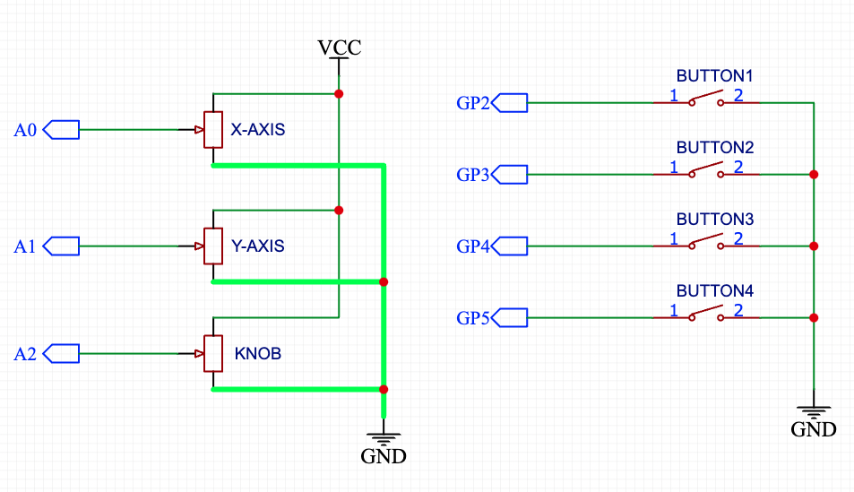
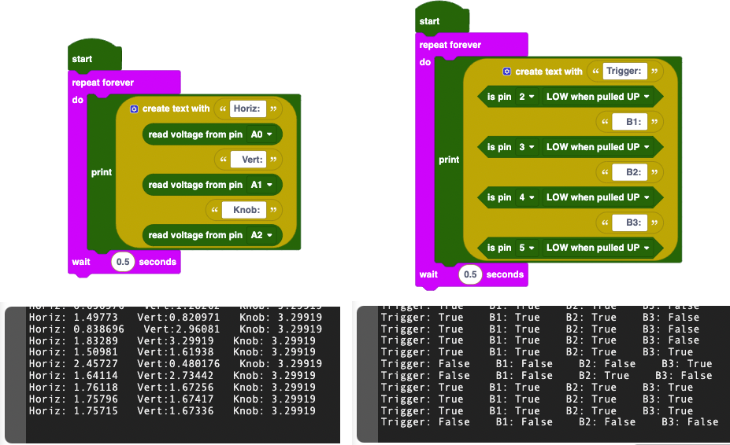

This project started out as a way for me to demonstrate to my engineering class how to reverse engineer something. I went to to Goodwill and looked around for a few items to dissasemble for my students. When I saw this classic joystick, I couldn't resist snatching it up!
The joystick is a Gravis Blackhawk, and has 4 buttons, a knob, and 2 axes (left-right and forward-back):
The joystick plugs into a Game Port on older computers. Most newer computers don't have a game port, so the joystick won't work without some kind of adapter.
The Game Port on older PCs were designed to support two simpler joysticks or a single, more complex joystick. The Game Port had connections for up to 4 varaible (analog) inputs and 4 button (digital) inputs:
One of the things I love about older electronics is that they can often be dissasempled with a single Philiips Screwdriver, and this joystick was no exception. The base of the joystick came apart after removing only a handful of easily accessable screws. Once I removed the bottom of the joystick, I could see everything inside:
If you look closely at the picture above, you can see a few interesting things. One of them is that the joystick contains several cylindrical weights (the gold-colored round things). These help keep the joystick on your desk and give it some "heft". You can also see the joystick's movement mechanism, the circuit board, and wires connecting everything.
Overall, it's a fairly simple design - there are no microcontrollers and the connections are very stragihtforward.
The Gravis Blackhawk Joystick I purchased for $7 used all 4 button inputs and 3 of the 4 variable inputs. Because I planned on connecting this to a microcontroller, I didn't need to figure out which buttons and potentiometers connected to which pin on the Game Port.
After a bit of poking around, here's the schematic I traced out for the joystick:
If you look carefully at that schemtic and the schematic above for a typical game port setup, you'll motice that only one of the two legs of the potentiometer is used. That is because on the game port, what you where outputting to the computer was a resistance between 0 and 10 kΩ. Microcontrollers, on the otherhand, expect you to output a voltage to their analog input pins. The good news is that the only change I needed to make was to ground the other leg of the potentiometers. Basically, this is what I added:
From there, I cut the cable and exposed each of its wires so that I could solder them to a Rasperry Pi Pico. I chose this microcontroller because it is what my students were using in their engineering class and I wanted to show them how easy it would be to make these modifications.
I also added an LED and a button soldered to the Pico's BOOTSEL tesp point. I did this so that I could still reflash the firmware on the Pico down the road if I needed to without dissasembling the joystick again.
You can see which pins each button and potentiometer are connected to by looking at the schematic above. With that info, I used Piper Make (make.playpiper.com) to write the program for the controller.
To test everything, I used these two programs. You can see their console outputs as well:
Once I was able to use the test programs to verify that everything was working correctly, and which buttons were connected to which GPIO pins, I built wrote a program that makes the joytick behave as a mouse:
What's nice about Piper Make is that you can open a tab to see the CircuitPython Code that it generates:
## ---- Imports ---- ##
import board
from piper_blockly import *
import usb_hid
from adafruit_hid.mouse import Mouse
from digitalio import Pull
## ---- Definitions ---- ##
button_0 = None
button_1 = None
joy_x = None
joy_y = None
joy_w = None
GP2 = piperPin(board.GP2, "GP2")
GP3 = piperPin(board.GP3, "GP3")
GP26 = piperPin(board.GP26, "GP26", "Analog")
GP27 = piperPin(board.GP27, "GP27", "Analog")
GP28 = piperPin(board.GP28, "GP28", "Analog")
mouse_HID = Mouse(usb_hid.devices)
def check_button_0():
global button_0, button_1, joy_x, joy_y, joy_w
if not GP2.checkPin(Pull.UP):
button_0 = True
mouse_HID.press(Mouse.LEFT_BUTTON)
if button_0 and not (not GP2.checkPin(Pull.UP)):
button_0 = False
mouse_HID.release(Mouse.LEFT_BUTTON)
def check_button_1():
global button_0, button_1, joy_x, joy_y, joy_w
if not GP3.checkPin(Pull.UP):
button_1 = True
mouse_HID.press(Mouse.RIGHT_BUTTON)
if button_1 and not (not GP3.checkPin(Pull.UP)):
button_1 = False
mouse_HID.release(Mouse.RIGHT_BUTTON)
## ---- Code ---- ##
button_0 = False
button_1 = False
while True:
check_button_0()
check_button_1()
joy_x = mapValue(GP26.readVoltage(), 0.1, 3.29, 10, (-10))
joy_y = mapValue(GP27.readVoltage(), 0.2, 3.29, 10, (-10))
joy_w = mapValue(GP28.readVoltage(), 0.2, 3.29, (-1), 1)
mouse_HID.move(int((round(joy_x))), int((round(joy_y))), int((round(joy_w))))
Because the code is python code is generated from the blocks, it can be a bit heavy handed with things like parenthesis and global variables, but it's a great starting point for customizing the code further and loading it more permanently onto the joystick.
One the issues that becomes immediately apparent with the code above is that there is a slight drift when the joystick is in the center position. This is very common problem with joysticks and it's why most applications don't use a linear mapping for the potentiometer.
There is a great deep dive on the topic here: Joystick input and using deadbands
The good news is that this fix is failry easy to implement in software.
If you read my Piper Make project article, you learned that before Piper Make, it was called PiperLab and it was based on a game controller. As part of that development we were using a controller-like platform. We ran into the same center-drift issues, so we built a CircuitPython function to correct it and apply a cubic scaled deadband to the input:
# This function applys a cubic scaled deadband to the analog inputs for the joystick.
# See http://www.mimirgames.com/articles/games/joystick-input-and-using-deadbands/
# for the motivation and theory
class piperJoystickAxis:
def __init__(self, pin, name, outputScale=20.0, deadbandCutoff=0.1, weight=0.2):
self.name = name
self.pin = AnalogIn(pin)
self.outputScale = outputScale
self.deadbandCutoff = deadbandCutoff
self.weight = weight
self.alpha = self._Cubic(self.deadbandCutoff)
# Cubic function to map input to output in such a way as to give more precision
# for lower values
def _Cubic(self, x):
return self.weight * x ** 3 + (1.0 - self.weight) * x
# Eliminate the jump present in the deadband, but use the cubic function to give
# more precision to lower values
#
def _cubicScaledDeadband(self, x):
if abs(x) < self.deadbandCutoff:
return 0
elif (x < 0):
return (self._Cubic(x) + self.alpha) / (1.0 - self.alpha)
else:
return (self._Cubic(x) - self.alpha) / (1.0 - self.alpha)
# The analog joystick output is an unsigned number 0 to 2^16, which we
# will scale to -1 to +1 for compatibility with the cubic scaled
# deadband article. This will then remap and return a value
# still in the range -1 to +1. Finally we multiply by the requested scaler
# an return an integer which can be used with the mouse HID.
#
def readJoystickAxis(self):
pinValue = self.pin.value
#if (digital_view == True):
# print(chr(17), self.name, "|", str(pinValue), chr(16), end="")
send_piper_pin_state(self.name, pinValue)
return int(self._cubicScaledDeadband((pinValue / 2 ** 15) - 1) * self.outputScale)
Even better - this function is still in the Piper Make CircuitPython Library that is part of the firmware installed on the Pico. There aren't any blocks that use it, but all I needed to do was make some small changes to the code for the joystick to use it:
## ---- Imports ---- ##
import board
from piper_blockly import *
import usb_hid
from adafruit_hid.mouse import Mouse
from digitalio import Pull
## ---- Definitions ---- ##
button_0 = None
button_1 = None
joy_x = None
joy_y = None
joy_w = None
GP2 = piperPin(board.GP2, "GP2")
GP3 = piperPin(board.GP3, "GP3")
GP26 = piperJoystickAxis(board.GP26, "GP26")
GP27 = piperJoystickAxis(board.GP27, "GP27")
GP28 = piperJoystickAxis(board.GP28, "GP28", outputScale=2.0)
mouse_HID = Mouse(usb_hid.devices)
def check_button_0():
global button_0, button_1, joy_x, joy_y, joy_w
if not GP2.checkPin(Pull.UP):
button_0 = True
mouse_HID.press(Mouse.LEFT_BUTTON)
if button_0 and not (not GP2.checkPin(Pull.UP)):
button_0 = False
mouse_HID.release(Mouse.LEFT_BUTTON)
def check_button_1():
global button_0, button_1, joy_x, joy_y, joy_w
if not GP3.checkPin(Pull.UP):
button_1 = True
mouse_HID.press(Mouse.RIGHT_BUTTON)
if button_1 and not (not GP3.checkPin(Pull.UP)):
button_1 = False
mouse_HID.release(Mouse.RIGHT_BUTTON)
## ---- Code ---- ##
button_0 = False
button_1 = False
while True:
check_button_0()
check_button_1()
joy_x = -GP26.readJoystickAxis()
joy_y = -GP27.readJoystickAxis()
joy_w = GP28.readJoystickAxis()
mouse_HID.move(int((round(joy_x))), int((round(joy_y))), int((round(joy_w))))
The cubic scaling also provides a more natural feel for the movement of the cursor. All in all, it's was a fun little project! It even got a mention in Hackster.io: